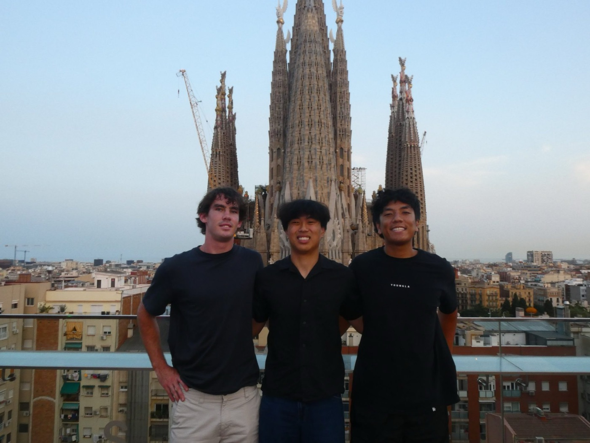
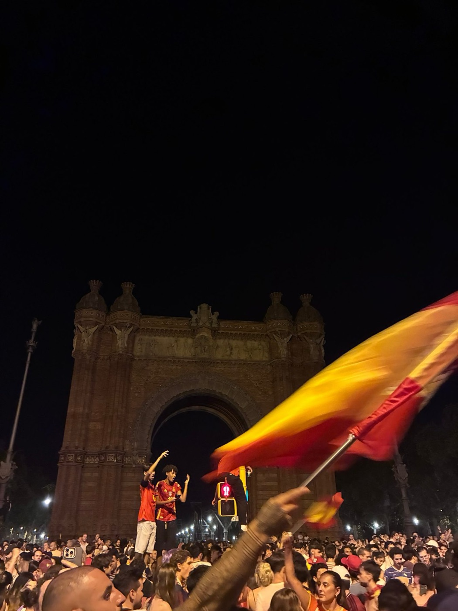
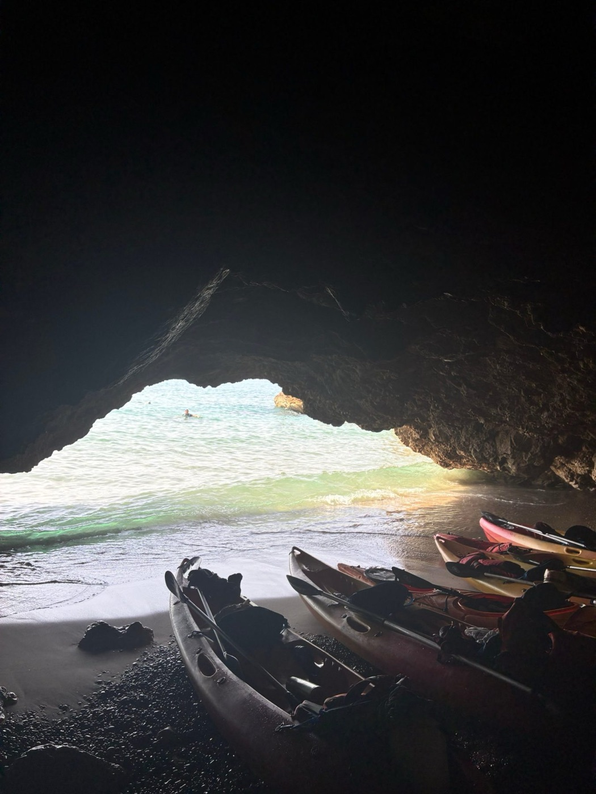
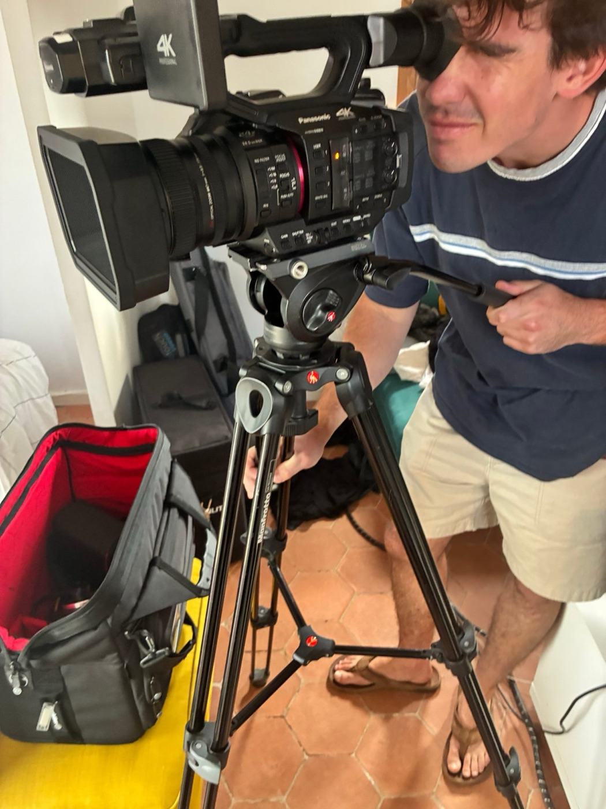

Hi, I'm Justin
I study Data Science at UCSD's Halıcıoğlu Data Science Institute, graduating March 2028. I like turning messy data into something a team can actually use.
4.0
GPA, Provost Honors every quarter
2nd
DataFest 2026, Best Use of External Data
10,000+
posts/hour through the piracy pipeline I led data for
67
market-data sources rated for reliability at CREDE
Featured projects
Full portfolio →Outside of work
Where I've been, and what I make when I'm not coding.




A summer in Barcelona
I spent four weeks studying film at UPF in Barcelona, fully immersed in Spanish culture. I filmed a skateboarding documentary, made short films, and visited museums with my class.
Mont Blanc
A journey of discovery, adventure, and endurance. My friends and I took on the 10-day Mont Blanc challenge, where we gained more elevation than climbing Everest. Our time away from our phones, a bed, and the city taught us about ourselves and brought us even closer together.
Landmarks
A Jack of all Trades
If it gets me outside and has a learning curve, I'm in. These days that means climbing, snowboarding, scootering and freediving.
Climbing
Snowboarding
Scootering
Freediving
For the community
With Homes of Hope, I got the chance to help build a home for a family in need in Mexico. Seeing what that home meant to them warmed my heart. Closer to home, I show up for beach cleanups and the Manhattan Beach Pier to Pier Friendship Walk.
“Don't waste your time chasing butterflies. Mend your garden, and the butterflies will come.”